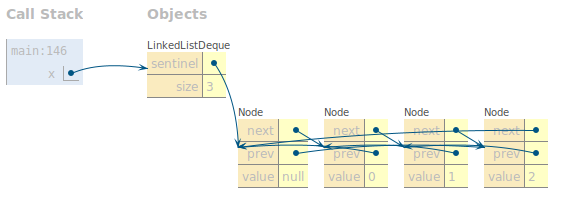

- Introduction
- Getting the Skeleton Files
- The Deque API
- Project Tasks
- Extra Credit: Checkpoint
- Testing
- Extra Credit: Autograder
- MaxArrayDeque
- Deque Interface
- Guitar Hero
- GuitarString
- Just For Fun: TTFAF
- Even More Fun
- Why It Works
- Submission and Grading
- Frequently Asked Questions
- Deque
- Guitar Hero
- I’m getting a “class file contains wrong class” error.
- I’m getting a message that I did not override an abstract method, but I am!
- When I try to run the provided tests I get “No runnable methods”.
- When I try to compile my code, it says type K#1 is not compatible with type K#2, or something similar.
- I’m getting a strange autograder error!
- Tips
The due date for this project is 02/16, but to keep you on track we have an extra credit checkpoint on 02/05 that will be a smaller version of the autograder for the project. More details later in the spec.
You will also push your snaps-sp21-s*** repo at the end of the assignment to
get your Gradescope score into Beacon. More on that later.
Recall you can only use 2 slip days on this project because of the dependency between Project 1 and Lab 4.
Introduction
In Project 1, we will build implementations of a “Double Ended Queue” using both lists and arrays in a package that other classes can use. The project is roughly split into two halves: the data structure portion and the application portion.
In the data structure part of the project, you will create two Java files:
LinkedListDeque.java and ArrayDeque.java, with public methods listed
below. You will be verifying the correctness of these data structures yourself
using the randomized and timing test skills you gained from Lab 3.
In the application part of this project, you’ll create a Java file
MaxArrayDeque.java as well as use your package to ultimately
implement a sound synthesizer capable of playing music from Guitar Hero.
You must test your MaxArrayDeque, but we’ll provide the tests for sound
synthesizer.
We will provide relatively little scaffolding. In other words, we’ll say what you should do, but not how.
For this project, you must work alone! Please carefully read the Policy on Collaboration and Cheating to see what this means exactly.
Additionally, we will be enforcing style. You must follow the style guide or you will lose points on the autograder.
Getting the Skeleton Files
As with Project 0, you should start by downloading the skeleton files.
To do this, head to the folder containing your copy of your repository. For example, if your login is ‘s101’, then head to the ‘sp21-s101’ folder (or any subdirectory).
To make sure you have the latest copy of the skeleton files, use the command:
git pull skeleton master
If you’re using a newer version of git, you might need to run:
git pull skeleton master -allow-unrelated-histories
You should now see a proj1 directory appear with two folders:
proj1
├── deque
│ └── LinkedListDequeTest.java
└── gh2
├── GuitarHeroLite.java
├── GuitarPlayer.java
├── GuitarString.java
├── TTFAF.java
└── TestGuitarString.java
If you get some sort of error, STOP and either figure it out by carefully
reading the git guide or seek help at OH or Ed. You’ll potentially save
yourself a lot of trouble vs. guess-and-check with git commands. If you find
yourself trying to use commands recommended by Google like
force push,
don’t. Don’t
use force push, even if a post you found on Stack Overflow says to do it!
The only provided files in the skeleton are the deque/LinkedListDequeTest.java
file as well as some skeleton for the second part of this project located in
the gh2 folder (guitar hero 2).
The deque/LinkedListDequeTest.java file provides examples of how you might
write tests to verify the correctness of your code. We strongly encourage you
try out the given tests, as well as to write your own, as these tests are
not comprehensive.
The tests in this file are also the exact tests that will be used in the
checkpoint to assess your progress on your LinkedListDeque implementation,
but we will also have additional tests for ArrayDeque that we do not give you.
More details on the appear checkpoint later in the spec.
Before we get into the details of the Deque API and the implementation requirements, let’s briefly talk about packages and why we are using them in this project.
Packages
Part of this project is using packages to separate logic and functionality.
At the end of the project, you’ll have two packages: the deque package that
provides an implementation of the Deque data structure, and the gh2 package
that implements a synthesizer used to play guitar hero. You should already see
folders with these names in the starter code, and your job is to implement them.
Let’s look at the specifics for what a package really is.
A package is a collection of Java classes that all work together towards some
common goal. We’ve already seen packages in CS 61B without knowing it. For example,
org.junit is a package that contains various classes useful for testing,
including our familiar Assert class, which contains useful static methods like
assertEquals. In other words, when we saw org.junit.Assert.assertEquals, the
org.junit was the package name, Assert was the class name, and
assertEquals was the method name. We call org.junit.Assert.assertEquals the
“canonical name” of the method, and we call assertEquals the “simple name” of
the method.
When creating a package, we specify that code is part of a package by specifying
the package name at the top of the file using the package keyword. For example,
if we wanted to declare that a file is part of the deque
package, we’d add the following line to the top of the file.
package deque;
If a programmer wanted to use a class or method from our
deque package, they would have to either use the full
canonical name, e.g. deque.ArrayDeque, or alternately use import
deque.ArrayDeque, at which point they could just use the simple
name ArrayDeque. So import statements just allow you to use the simple
name of a class/method.
Typically, package names are the internet address of the entity writing the
code, but backwards. For example, the JUnit library is hosted at junit.org, so
the package is called org.junit.
Why are packages useful? It all boils down to that word “canonical”. As long as
no two programmers use the same package name for their package, we can freely
use the same class name in several different contexts. For example, there might
exist a class called com.hrblock.TaxCalculator, which is different from
com.turbotax.TaxCalculator. Given the requirement to either use the full
canonical name or to use an import, this means we’ll never accidentally use one
class when we meant to use the other.
Conceptually, you can think of packages as being similar to different folders on your computer. When you are building a large system, it is a good idea to organize it into different packages.
From this point forwards, most of our code in CS 61B will be part of a package.
With that out of the way, let’s talk about the methods that a Deque should have.
The Deque API
The double ended queue is very similar to the SLList and AList classes that we’ve discussed in class. Here is a definition from cplusplus.com.
Deque (usually pronounced like “deck”) is an irregular acronym of double-ended queue. Double-ended queues are sequence containers with dynamic sizes that can be expanded or contracted on both ends (either its front or its back).
Specifically, any deque implementation must have exactly the following operations:
public void addFirst(T item): Adds an item of typeTto the front of the deque. You can assume thatitemis nevernull.public void addLast(T item): Adds an item of typeTto the back of the deque. You can assume thatitemis nevernull.public boolean isEmpty(): Returnstrueif deque is empty,falseotherwise.public int size(): Returns the number of items in the deque.public void printDeque(): Prints the items in the deque from first to last, separated by a space. Once all the items have been printed, print out a new line.public T removeFirst(): Removes and returns the item at the front of the deque. If no such item exists, returnsnull.public T removeLast(): Removes and returns the item at the back of the deque. If no such item exists, returnsnull.public T get(int index): Gets the item at the given index, where 0 is the front, 1 is the next item, and so forth. If no such item exists, returnsnull. Must not alter the deque!
In addition, we also want our two Deques to implement these two special methods:
public Iterator<T> iterator(): The Deque objects we’ll make are iterable (i.e.Iterable<T>) so we must provide this method to return an iterator.public boolean equals(Object o): Returns whether or not the parameterois equal to the Deque.ois considered equal if it is a Deque and if it contains the same contents (as goverened by the genericT’sequalsmethod) in the same order. (ADDED 2/12: You’ll need to use theinstance ofkeywords for this. Read here for more information)
ADDED 2/12: You should not have your Deque interface implement Iterable
but rather just the two implementations LinkedListDeque and ArrayDeque.
If you do the former, our autograder will give you API errors.
You’ll learn what an Iterator is in lecture 11 (2/12), so don’t worry for
about it right now. This project is meant to be done little by little as you learn
more things from lecture and discussion, and it’s a fantastic opportunity to
practice all the things you learn in this course.
Your class should accept any generic type (not just integers). For information on creating and using generic data structures, see lecture 5. Make sure to pay close attention to the rules of thumb on the last slide about generics.
In this project, you will provide two implementations for the Deque interface: one powered by a Linked List, and one by a resizing array.
Project Tasks
1. Linked List Deque
Note: We covered everything needed in lecture to do this part in Lectures 4 and 5 (1/27 and 1/25) with the exception of Iterators, which you’ll learn about in lecture 11 (2/12).
Create a file called LinkedListDeque.java in your proj1/deque directory. Make
sure you declare that it is in the deque package using the special package
keyword.
As your first deque implementation, you’ll build the LinkedListDeque class,
which will be Linked List based.
Your operations are subject to the following rules:
addandremoveoperations must not involve any looping or recursion. A single such operation must take “constant time”, i.e. execution time should not depend on the size of the deque. This means that you cannot use loops that go over all/most elements of the deque.getmust use iteration, not recursion.sizemust take constant time.- Iterating over the
LinkedListDequeusing a for-each loop should take time proportional to the number of items. - Do not maintain references to items that are no longer in the deque. The amount of memory that your program uses at any given time must be proportional to the number of items. For example, if you add 10,000 items to the deque, and then remove 9,999 items, the resulting memory usage should amount to a deque with 1 item, and not 10,000. Remember that the Java garbage collector will “delete” things for us if and only if there are no pointers to that object.
Implement all the methods listed above in “The Deque API” section.
In addition, you also need to implement:
public LinkedListDeque(): Creates an empty linked list deque.public T getRecursive(int index): Same as get, but uses recursion.
You may add any private helper classes or methods in LinkedListDeque.java if
you deem it necessary. If you do, please add helpful javadoc comments for your
and your TAs sake.
While this may sound simple, there are many design issues to consider, and you
may find the implementation more challenging than you’d expect. Make sure to
consult the lecture on doubly linked lists, particularly the slides on sentinel
nodes: two sentinel
topology,
and circular sentinel
topology.
I prefer the circular approach. You are not allowed to use Java’s built in
LinkedList data structure (or any data structure from java.util.*) in your
implementation and the autograder will instantly give you a 0 if we detect
that you’ve imported any such data structure.
2. Array Deque
Note: We’ll have covered everything needed in lecture to do this part by lecture 7 (2/03) with the exception of Iterators, which you’ll learn about in lecture 11 (2/12).
Create a file called ArrayDeque.java in your proj1/deque directory. Again,
use the package keyword to tell this file that it is part of the deque
package.
As your second deque implementation, you’ll build the ArrayDeque class. This
deque must use arrays as the core data structure.
For this implementation, your operations are subject to the following rules:
addandremovemust take constant time, except during resizing operations.getandsizemust take constant time.- The starting size of your array should be 8.
- The amount of memory that your program uses at any given time must be proportional to the number of items. For example, if you add 10,000 items to the deque, and then remove 9,999 items, you shouldn’t still be using an array of length 10,000ish. For arrays of length 16 or more, your usage factor should always be at least 25%. This means that before performing a remove operation that will bring the number of elements in the array under 25% the length of the array, you should resize the size of the array down. For smaller arrays, your usage factor can be arbitrarily low.
Implement all the methods listed above in “The Deque API” section.
In addition, you also need to implement:
public ArrayDeque(): Creates an empty array deque.
You may add any private helper classes or methods in ArrayDeque.java if you
deem it necessary.
You will need to somehow keep track of what array indices hold the Deque’s front and back elements. We strongly recommend that you treat your array as circular for this
exercise. In other words, if your front item is at position zero, and you
addFirst, the new front should loop back around to the end of the array
(so the new front item in the deque will be the last item in the underlying
array). This will result in far fewer headaches than non-circular approaches.
See the project 1 demo
slides
for more details.
Correctly resizing your array is very tricky, and will require some deep thought. Try drawing out various approaches by hand. It may take you quite some time to come up with the right approach, and we encourage you to debate the big ideas with your fellow students or TAs. Make sure that your actual implementation is by you alone.
Extra Credit: Checkpoint
To keep you on track for this project, we have a checkpoint due on 2/05 for 16
extra credit points. The autograder for the checkpoint will test basic
functionality of your LinkedListDeque and ArrayDeque classes: specifically,
the given tests in LinkedListDequeTest.java will be used to test
your LinkedListDeque implementation, and we will use our own
tests to test your ArrayDeque implementation. By “basic functionality”, we
mean all the add methods, all the remove methods, the size method, the
isEmpty method, and the
get method. This means we will not test your equals(Object o) nor your
iterator() methods.
NOTE: the isEmpty has been on the grader the whole time but we added this
to the spec today (2/5). However, if you made the size method, this method
should be a piece of cake (you can make it a one-liner).
Importantly, we will insert
no more than 8 items in your ArrayDeque, meaning you shouldn’t have to
worry about resizing for this checkpoint.
You may choose not to do the checkpoint, but we highly suggest you do so that you stay on track and earn some extra credit while you’re at it.
The rest of the assignment will not be considered in the checkpoint.
Testing
Testing is an important part of code writing in industry and academia. It is an essential skill that can prevent monetary loss and hazardous bugs in industry, or in your case, losing points. Learning how to write good, comprehensive unit tests, and developing a good habit of always testing code before shipping are some core objectives of CS 61B.
In the start code, we have provided you a very simple sanity check,
LinkedListDequeTest.java. To use the sample testing file, you must uncomment
the lines in the sample tests. Only uncomment a test once you have implemented
all of the methods used by that test (otherwise it won’t compile). Execute the
main method to run the tests. When testing your project, remember you can use
the visualizer from inside IntelliJ!
You will not submit LinkedListDequeTest.java. It is for your benefit to write
more comprehensive tests for both LinkedListDeque and ArrayDeque before
submitting. Note, passing the given tests in LinkedListDequeTest.java does
not necessarily mean that you will pass all of the autograder tests or
receive full credit on the full autograder
Because the part of the goals for this project is for you to build something and assess the correctness by yourself, we do not want you to become to reliant on the full autograder to verify correctness. Thus, you will receive one autograder token that recharges every 8 hours. You cannot “stack” these tokens, so if you do not submit anything to the autograder for 3 days, you still only have one token.
On Saturday 2/13, the recharge rate will permanently reduce to every 20 minutes.
So how do you verify correctness of your data structure? You use your skills
that you got from Lab 3! You are encouraged to copy and paste those tests for
SList and AList and adapt them for these data structures. The tests will
look very similar and only require basic changes.
While it does seem very daunting and scary to do an entire project with very minimal access to the autograder, you should feel very confident in your implementation if your randomized tests are really big. With just a few lines of code, you could test your data structures with sizes in the 100,000’s and all sorts of random method calls in random order. In other words, you are testing a whole lot of cases on your data structures and are likely testing every possible edge case! This is the beauty of randomized testing: it allows us to leave the creativity of thinking of edge cases to randomness.
The tests you create will not be graded, but there is an additional extra credit portion of this project in which you will write your own autograder. Details near the bottom of the spec.
Your code will not compile on the full autograder until you implement the Deque
interface and all of the required methods. So if you’ve done everything on
the spec up until this point, you should be using the checkpoint grader and
not the full grader.
Extra Credit: Autograder
For 32 points of extra credit, you can create your own autograder for deques! Full details are on this spec (to avoid cluttering this one). It is due the same day as Project 1 (2/16). You can use slip days on extra credit assignments, but understand that staff will prioritize the required portions when helping students on Ed and in Office Hours. We don’t suggest working on this extre credit assignment until you’ve finished the entire project, so keep this in mind but continue with the assignment for now.
MaxArrayDeque
After you’ve fully implemented your ArrayDeque and tested its correctness, you
will now build the MaxArrayDeque. A MaxArrayDeque has all of the methods
that an ArrayDeque has, but it also has 2 additional methods and a new
constructor:
public MaxArrayDeque(Comparator<T> c): creates aMaxArrayDequewith the givenComparator.public T max(): returns the maximum element in the deque as governed by the previously givenComparator. If theMaxArrayDequeis empty, simply returnnull.public T max(Comparator<T> c): returns the maximum element in the deque as governed by the parameterComparator c. If theMaxArrayDequeis empty, simply returnnull.
The MaxArrayDeque can either tell you the max element in itself by using the
Comparator<T> given to it in the constructor, or an arbitrary Comparator<T>
that is different from the one given in the constructor.
We do not care about the equals(Object o) method of this class, so feel free
to define it however you think is most appropriate. We will not test this
method.
If you find yourself starting off by copying your entire ArrayDeque
implementation in a MaxArrayDeque file, then you’re doing it wrong. This is
an exercise in clean code, and redundancy is one our worst enemies when
battling complexity! For a hint, re-read the second sentence of this section
above.
There are no runtime requirements on these additional methods, we only care
about the correctness of your answer. Sometimes, there might be multiple
elements in the MaxArrayDeque that are all equal and hence all the max: in
in this case, you can return any of them and they will be considered correct.
You should write tests for this part as well! They do not need to be nearly as
robust as your randomized and timing tests you created for the two Deque
implementations above since the functionality you’re adding is fairly simple.
You’ll likely be creating multiple Comparator<T> classes to test your code:
this is the point! To get practice using Comparator objects to do something
useful (find the maximum element) and to get practice writing your own
Comparator classes. You will not be turning in these tests, but we still
highly suggest making them for your sake.
You will not use the MaxArrayDeque you made for the next part. It is it’s own
isolated exercise.
Deque Interface
In the last part of this project, we’re actually going to use the data structure you made to solve a real world problem.
Recall that we defined the Deque API, or behavior, by the following methods:
public void addFirst(T item)
public void addLast(T item)
public boolean isEmpty()
public int size()
public void printDeque()
public T removeFirst()
public T removeLast()
public T get(int index)
Since your program will rely on this behavior, it shouldn’t matter to it what Deque
implementation it is provided, ArrayDeque or LinkedListDeque, and should
work for both. To achieve this, we will use the power of interfaces.
This first task is going to be a little tedious, but it won’t take long.
Create an interface in a new file named Deque.java that contains all of the
methods above.
In IntelliJ, use “New → Java Class”. IntelliJ will assume you want a class, so make
sure to replace the class keyword with interface. Don’t forget to declare that
the Deque interface is part of the deque package!
Modify your LinkedListDeque and/or ArrayDeque so that they implement the Deque
interface by adding implements Deque<T> to the line declaring the existence of the
class. If IntelliJ yells at you with an error message like:
The method ... of type LinkedListDeque has the same erasure as ... of type Deque but does not override it.
It means you forgot the generic T in the implements line (i.e. you wrote
implements Deque instead of implements Deque<T>).
If you used something other than T for your generic type parameter, use
that instead. Add @Override tags to each method that overrides a Deque method.
Now, in the Deque interface, give isEmpty() a default implementation, which returns true if the size() is 0.
Since your LinkedListDeque and ArrayDeque implement the Deque interface, given the default
isEmpty() implementation, you can remove that method from the LinkedListDeque and ArrayDeque that
you implemented earlier.
Now, after you’ve implemented the Deque interface and removed the isEmpty()
method from your LinkedListDeque and ArrayDeque implementations, your code
will compile on the full autograder.
Guitar Hero
In this part of the project, we will create another package for generating
synthesized musical instruments using the deque package we just made.
We’ll get the opportunity to use our data structure for implementing an algorithm
that allows us to simulate the plucking of a guitar string.
The GH2 Package
The gh2 package has just one primary component that you will edit:
GuitarString, a class which uses anDeque<Double>to implement the Karplus-Strong algorithm to synthesize a guitar string sound.
We’ve provided you with skeleton code for GuitarString which is where you
will use your deque package that you made in the first part of this project.
GuitarString
We want to finish the GuitarString file, which should use the deque package to
replicate the sound of a plucked string. We’ll be using the Karplus-Strong
algorithm, which is quite easy to implement with a Deque.
The Karplus-Algorithm is simply the following three steps:
- Replace every item in a
Dequewith random noise (doublevalues between -0.5 and 0.5). - Remove the front double in the
Dequeand average it with the next double in theDeque(hint: useremoveFirst)andget()) multiplied by an energy decay factor of 0.996 (we’ll call this entire quantitynewDouble). Then, addnewDoubleto the back of theDeque. - Play the
double(newDouble) that you dequeued in step 2. Go back to step 2 (and repeat forever).
Or visually, if the Deque is as shown on the top, we’d remove the 0.2,
combine it with the 0.4 to form 0.2988, add the 0.2988, and play the 0.2.

You can play a double value with the StdAudio.play method. For example
StdAudio.play(0.333) will tell the diaphragm of your speaker to extend itself
to 1/3rd of its total reach, StdAudio.play(-0.9) will tell it to stretch its
little heart backwards almost as far as it can reach. Movement of the speaker
diaphragm displaces air, and if you displace air in nice patterns, these
disruptions will be interpreted by your consciousness as pleasing thanks to
billions of years of evolution. See this
page for more. If you simply
do StdAudio.play(0.9) and never play anything again, the diaphragm shown in
the image would just be sitting still 9/10ths of the way forwards.
Complete GuitarString.java so that it implements steps 1 and 2 of the
Karplus-Strong algorithm. Note that you will have to fill you Deque buffer with zeros in the GuitarString constructor. Step 3 will be done by the client of the
GuitarString class.
Make sure to open your project with Maven, as usual, otherwise IntelliJ
won’t be able to find StdAudio.
For example, the provided TestGuitarString class provides a sample test
testPluckTheAString that attempts to play an A-note on a guitar string. If you run the test
should hear an A-note when you run this test. If you don’t, you should try the
testTic method and debug from there. Consider adding a print or toString
method to GuitarString.java that will help you see what’s going on between
tics.
Note: we’ve said Deque here, but not specified which Deque implementation
to use. That is because we only need those operations addLast, removeFirst,
and get and we know that classes that implement Deque have them. So you
are free to choose either the LinkedListDeque for the actual implementation,
or the ArrayDeque. For an optional (but highly suggested) exercise, think
about the tradeoffs with using one vs the other and discuss with your friends
what you think the better choice is, or if they’re both equally fine choices.
GuitarHeroLite
You should now also be able to use the GuitarHeroLite class. Running it will
provide a graphical interface, allowing the user (you!) to interactively play sounds
using the gh2 package’s GuitarString class.
The following part of the assignment is not graded.
Consider creating a program GuitarHero that is similar to GuitarHeroLite,
but supports a total of 37 notes on the chromatic scale from 110Hz to 880Hz. Use
the following 37 keys to represent the keyboard, from lowest note to highest
note:
String keyboard = "q2we4r5ty7u8i9op-[=zxdcfvgbnjmk,.;/' ";
This keyboard arrangement imitates a piano keyboard: The “white keys” are on the qwerty and zxcv rows and the “black keys” on the 12345 and asdf rows of the keyboard.
The ith character of the string keyboard corresponds to a frequency of $440
\cdot 2^{(i - 24) / 12}$, so that the character ‘q’ is 110Hz, ‘i’ is 220Hz, ‘v’
is 440Hz, and ‘ ‘ is 880Hz. Don’t even think of including 37 individual
GuitarString variables or a 37-way if statement! Instead, create an array of 37
GuitarString objects and use keyboard.indexOf(key) to figure out which key was
typed. Make sure your program does not crash if a key is pressed that does not
correspond to one of your 37 notes.
Just For Fun: TTFAF
Once you’re relatively comfortable that GuitarString should be working, try
running TTFAF. Make sure your sound is on!
You can read the GuitarPlayer and TTFAF classes to figure out how they work.
TTFAF in particular includes (as commented-out code) an example of how to use
it another way.
Even More Fun
This part of the assignment is not graded and just for fun.
- Harp strings: Create a Harp class in the
gh2package. Flipping the sign of the new value before enqueueing it intic()will change the sound from guitar-like to harp-like. You may want to play with the decay factors to improve the realism, and adjust the buffer sizes by a factor of two since the natural resonance frequency is cut in half by thetic()change. - Drums: Create a Drum class in the
gh2package. Flipping the sign of a new value with probability 0.5 before enqueueing it intic()will produce a drum sound. A decay factor of 1.0 (no decay) will yield a better sound, and you will need to adjust the set of frequencies used. - Guitars play each note on one of 6 physical strings. To simulate this you can
divide your
GuitarStringinstances into 6 groups, and when a string is plucked, zero out all other strings in that group. - Pianos come with a damper pedal which can be used to make the strings stationary. You can implement this by, on iterations where a certain key (such as Shift) is held down, changing the decay factor.
- While we have used equal temperament, the ear finds it more pleasing when musical intervals follow the small fractions in the just intonation system. For example, when a musician uses a brass instrument to play a perfect fifth harmonically, the ratio of frequencies is 3/2 = 1.5 rather than 27/12 ∼ 1.498. Write a program where each successive pair of notes has just intonation.
Why It Works
The two primary components that make the Karplus-Strong algorithm work are the ring buffer feedback mechanism and the averaging operation.
- The ring buffer feedback mechanism. The ring buffer models the medium (a string tied down at both ends) in which the energy travels back and forth. The length of the ring buffer determines the fundamental frequency of the resulting sound. Sonically, the feedback mechanism reinforces only the fundamental frequency and its harmonics (frequencies at integer multiples of the fundamental). The energy decay factor (.996 in this case) models the slight dissipation in energy as the wave makes a round trip through the string.
- The averaging operation. The averaging operation serves as a gentle low-pass filter (which removes higher frequencies while allowing lower frequencies to pass, hence the name). Because it is in the path of the feedback, this has the effect of gradually attenuating the higher harmonics while keeping the lower ones, which corresponds closely with how a plucked guitar string sounds.
Submission and Grading
To submit the project, add and commit your files, then push to your remote repository. Then on Gradescope go to the assignment and submit there.
After your final submission on Gradescope, you must push your snaps repo.
Your Gradescope score will not be transferred to Beacon until you’ve pushed your snaps repo and submitted to the Snaps Gradescope assignment. To push your snaps repo, run these commands:
cd $SNAPS_DIR
git push
After you’ve pushed your snaps repository, there is a Gradescope assignment
that you will submit your snaps-sp21-s*** repository to (similar to Lab 1A).
This is only for the full grader (not the checkpoint nor the extra credit
assignment).
You can do this up to a week after the deadline as well in case you forget. If you forget to push after a week, then you’ll have to use slip days.
NOTE: we slightly edited the above snaps thing as of 2/07 from simply pushing your snaps repo to pushing and submitting on Gradescope so it’s more obvious for you, the student, that your submission went through.
The entire project is worth 640 points
deque/LinkedListDeque: 230 pointsdeque/ArrayDeque: 230 pointsdeque/MaxArrayDeque: 80 pointsgh2/GuitarString: 80 points
And there are a total of 48 extra credit points available:
- Full points on the checkpoint (16 points)
- Making an autograder (32 points)
Frequently Asked Questions
Deque
Q: How should I print the items in my deque when I don’t know their type?
A: It’s fine to use the default String that will be printed (this string comes
from an Object’s implementation of toString(), which we’ll talk more about
later this semester). For example, if you called the generic type in your
class Jumanji, to print Jumanji j, you can call System.out.print(j).
Q: I can’t get Java to create an array of generic objects!
A: Use the strange syntax we saw in lecture,
i.e. T[] a = (T[]) new Object[1000];. Here, T is a generic type, it’s a placeholder for other
Object types like “String” or “Integer”.
Q: I tried that but I’m getting a compiler warning?
A: Sorry, this is something the designers of Java messed up when they introduced generics into Java. There’s no nice way around it. Enjoy your compiler warning. We’ll talk more about this in a few weeks.
Q: How do I make my arrows point to particular fields of a data structure?
In your diagram from lecture it looked like the arrows were able to point to the middle of an array or at specific fields of a node.
A: Any time I drew an arrow in class that pointed at an object, the pointer was to the ENTIRE object, not a particular field of an object. In fact it is impossible for a reference to point to the fields of an object in Java.
Guitar Hero
I’m getting a “class file contains wrong class” error.
Make sure all of your Java files have the right package declaration at the top.
Also make sure that anything that is part of the gh2
package is in a folder called “gh2”.
I’m getting a message that I did not override an abstract method, but I am!
Chances are you have a typo. You should always use the @Override tag when overriding methods so that the compiler will find any such typos.
When I try to run the provided tests I get “No runnable methods”.
Make sure you’ve uncommented the tests, including the @Test annotation.
When I try to compile my code, it says type K#1 is not compatible with type K#2, or something similar.
If you’re defining an inner class, make sure it does not redeclare a new generic
type parameter, e.g. the first <Z> given in private class MapWizard<Z>
implements Iterator<Z>{ should not be there!
I’m getting a strange autograder error!
While GuitarString is a guitar string simulator, it should not involve playing
any sounds. The playing should be done by the GuitarString client.
Credits: RingBuffer figures from wikipedia. This assignment adapted from Kevin Wayne’s Guitar Heroine assignment.
Tips
-
Check out the project 1 slides for some additional visually oriented tips.
-
If you’re stuck and don’t even know where to start: One great first step is implementing
SLListand/orAList. For maximum efficiency, work with a friend or two or three. -
Take things a little at a time. Writing tons of code all at once is going to lead to misery and only misery. If you wrote too much stuff and feel overwhelmed, comment out whatever is unnecessary.
-
If your first try goes badly, don’t be afraid to scrap your code and start over. The amount of code for each class isn’t actually that much (my solution is about 130 lines for each .java file, including all comments and whitespace).
-
For
ArrayDeque, consider not doing resizing at all until you know your code works without it. Resizing is a performance optimization (and is required for full credit). -
Work out what your data structures will look like on paper before you try implementing them in code! If you can find a willing friend, have them give commands, while you attempt to draw everything out. Try to come up with operations that might reveal problems with your implementation.
-
Make sure you think carefully about what happens if the data structure goes from empty, to some non-zero size (e.g. 4 items) back down to zero again, and then back to some non-zero size. This is a common oversight.
-
Sentinel nodes make life much easier, once you understand them.
-
Circular data structures may take a little while to understand, but make life much easier for both implementations (but especially the
ArrayDeque). -
Consider a helper function to do little tasks like compute array indices. For example, in my implementation of
ArrayDeque, I wrote a function calledint minusOne(int index)that computed the index immediately “before” a given index. -
Consider using the Java Visualizer (which you installed in lab2setup) to visualize your Deque as you step through with the debugger. The visualizer is an icon of a blue coffee cup with an eye, and is the tab next to the “Console” tab in the debugger panel). See the CS 61B plugin guide if you can’t figure out how to get the visualizer to show. The visualizer will look something like this: 